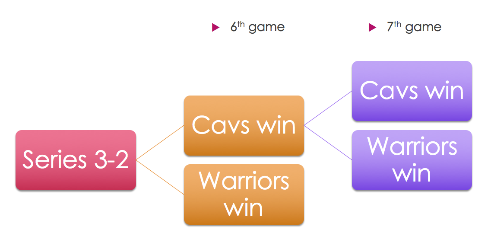
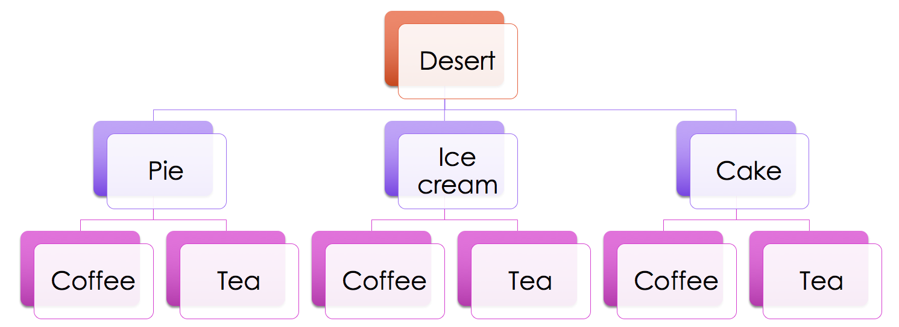

Example: We posit that two teams are evenly matched, but one happens to be up, 3-2, in a seven game series. What are the odds the team that is up will win?
Tree diagram:

So, if each branch is equally likely:
Half the time, the Warriors win game 6, and the series is over.
The other half the time, the Cavs win game 6. Then, half the time, the Warriors win game 7, and half the time the Cavs win game 7. One half of one half is one quarter... so 25% of the time the Cavs win the series.
Example:You have gone out for dinner, and have various after-dinner options (my graphic should say "dessert," not "desert"):

So how many possible ways can we eat dessert? Three choices for the sweet, and two for the beverage. 2 * 3 = 6.
If we were the sort of person who chose our meal randomly, there would be a 1/6 probability of getting any one of those combinations.
More on probability tree diagrams.
Khan Academy video on tree diagrams.